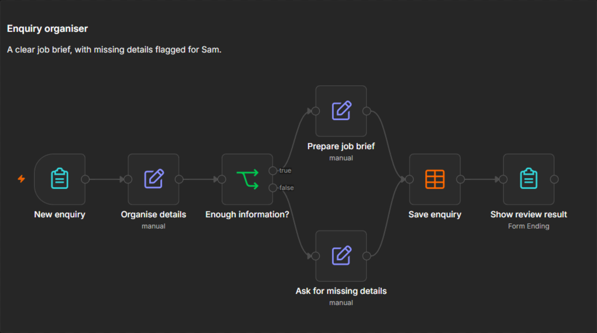
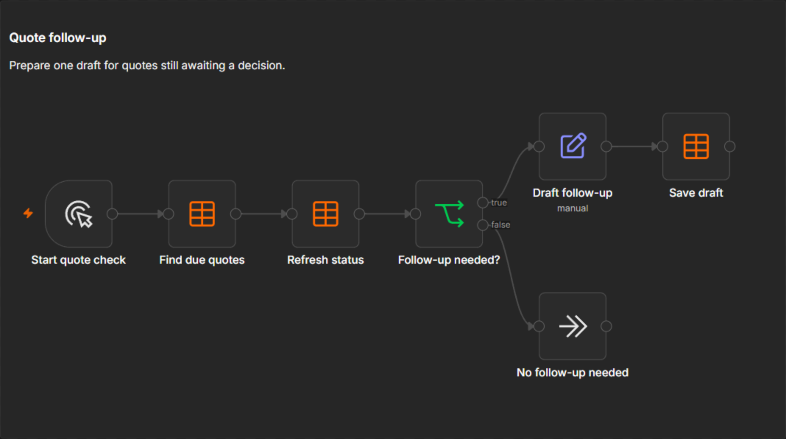
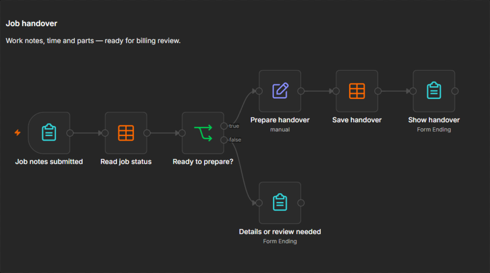

How the steps could connect
Three illustrative workflows, using fictional data. Configuration and live testing are still required; no customer messages are being sent.
Enquiry organiser
New enquiry → check required details → prepare a summary and reply draft.

Proposed workflow layout; configuration and live testing are still required.
Quote follow-up
Check current quote status → identify eligible follow-ups → prepare a draft for review.

Proposed workflow layout; configuration and live testing are still required.
Job handover for billing review
Completion notes → check missing information → prepare a handover for the invoice.

Proposed workflow layout; configuration and live testing are still required.